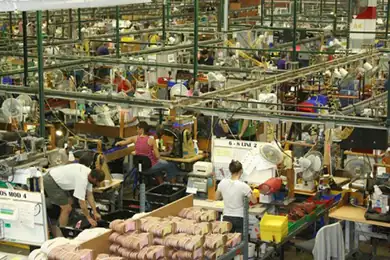
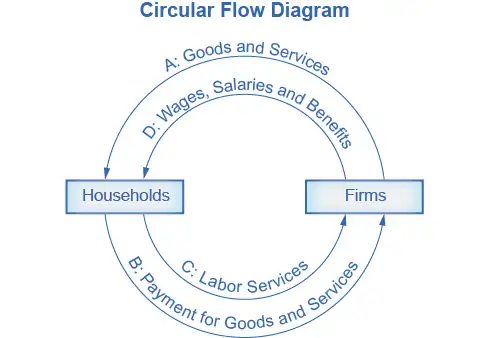

Chapter 1: Welcome to Economics!¶
Introduction¶
Bring It Home: Information Overload in the Information Age
To post or not to post? Every day we are faced with a myriad of decisions, from what to have for breakfast, to which show to stream, to the more complex—“Should I double major and add possibly another semester of study to my education?” Our response to these choices depends on the information we have available at any given moment. Economists call this “imperfect” because we rarely have all the data we need to make perfect decisions. Despite the lack of perfect information, we still make hundreds of decisions a day.
Streams, sponsors, and social media are altering the process by which we make choices, how we spend our time, which movies we see, which products we buy, and more. Whether they read the reviews or just check the ratings, it's unlikely for Americans to make many significant decisions without these information streams.
As you will see in this course, what happens in economics is affected by how well and how fast information disseminates through a society, such as how quickly information travels through Facebook. “Economists love nothing better than when deep and liquid markets operate under conditions of perfect information,” says Jessica Irvine, National Economics Editor for News Corp Australia.
This leads us to the topic of this chapter, an introduction to the world of making decisions, processing information, and understanding behavior in markets —the world of economics. Each chapter in this book will start with a discussion about current (or sometimes past) events and revisit it at chapter’s end—to “bring home” the concepts in play.
Chapter Outline: Introduction
In this chapter, you will learn about:
- What Is Economics, and Why Is It Important?
- Microeconomics and Macroeconomics
- How Economists Use Theories and Models to Understand Economic Issues
- How Economies Can Be Organized: An Overview of Economic Systems
What is economics and why should you spend your time learning it? After all, there are other disciplines you could be studying, and other ways you could be spending your time. As the Bring it Home feature just mentioned, making choices is at the heart of what economists study, and your decision to take this course is as much as economic decision as anything else.
Economics is probably not what you think. It is not primarily about money or finance. It is not primarily about business. It is not mathematics. What is it then? It is both a subject area and a way of viewing the world.
1.1 What Is Economics, and Why Is It Important?¶
Learning Objectives
By the end of this section, you will be able to:
- Discuss the importance of studying economics
- Explain the relationship between production and division of labor
- Evaluate the significance of scarcity
Economics is the study of how humans make decisions in the face of scarcity. These can be individual decisions, family decisions, business decisions or societal decisions. If you look around carefully, you will see that scarcity is a fact of life. Scarcity means that human wants for goods, services and resources exceed what is available. Resources, such as labor, tools, land, and raw materials are necessary to produce the goods and services we want but they exist in limited supply. Of course, the ultimate scarce resource is time- everyone, rich or poor, has just 24 expendable hours in the day to earn income to acquire goods and services, for leisure time, or for sleep. At any point in time, there is only a finite amount of resources available.
Think about it this way: In 2015 the labor force in the United States contained over 158 million workers, according to the U.S. Bureau of Labor Statistics. The total land area was 3,794,101 square miles. While these are certainly large numbers, they are not infinite. Because these resources are limited, so are the numbers of goods and services we produce with them. Combine this with the fact that human wants seem to be virtually infinite, and you can see why scarcity is a problem.
Introduction to FRED¶
Data is very important in economics because it describes and measures the issues and problems that economics seek to understand. A variety of government agencies publish economic and social data. For this course, we will generally use data from the St. Louis Federal Reserve Bank's FRED database. FRED is very user friendly. It allows you to display data in tables or charts, and you can easily download it into spreadsheet form if you want to use the data for other purposes. The FRED website includes data on nearly 400,000 domestic and international variables over time, in the following broad categories:
- Money, Banking & Finance
- Population, Employment, & Labor Markets (including Income Distribution)
- National Accounts (Gross Domestic Product & its components), Flow of Funds, and International Accounts
- Production & Business Activity (including Business Cycles)
- Prices & Inflation (including the Consumer Price Index, the Producer Price Index, and the Employment Cost Index)
- International Data from other nations
- U.S. Regional Data
- Academic Data (including Penn World Tables & NBER Macrohistory database)
For more information about how to use FRED, see the variety of videos on YouTube starting with this introduction.
If you still do not believe that scarcity is a problem, consider the following: Does everyone require food to eat? Does everyone need a decent place to live? Does everyone have access to healthcare? In every country in the world, there are people who are hungry, homeless (for example, those who call park benches their beds, as Figure 1.2 shows), and in need of healthcare, just to focus on a few critical goods and services. Why is this the case? It is because of scarcity. Let’s delve into the concept of scarcity a little deeper, because it is crucial to understanding economics.
The Problem of Scarcity¶
Think about all the things you consume: food, shelter, clothing, transportation, healthcare, and entertainment. How do you acquire those items? You do not produce them yourself. You buy them. How do you afford the things you buy? You work for pay. If you do not, someone else does on your behalf. Yet most of us never have enough income to buy all the things we want. This is because of scarcity. So how do we solve it?
Link It Up
Visit this website to read about how the United States is dealing with scarcity in resources.
Every society, at every level, must make choices about how to use its resources. Families must decide whether to spend their money on a new car or a fancy vacation. Towns must choose whether to put more of the budget into police and fire protection or into the school system. Nations must decide whether to devote more funds to national defense or to protecting the environment. In most cases, there just isn’t enough money in the budget to do everything. How do we use our limited resources the best way possible, that is, to obtain the most goods and services we can? There are a couple of options. First, we could each produce everything we each consume. Alternatively, we could each produce some of what we want to consume, and “trade” for the rest of what we want. Let’s explore these options. Why do we not each just produce all of the things we consume? Think back to pioneer days, when individuals knew how to do so much more than we do today, from building their homes, to growing their crops, to hunting for food, to repairing their equipment. Most of us do not know how to do all—or any—of those things, but it is not because we could not learn. Rather, we do not have to. The reason why is something called the division and specialization of labor, a production innovation first put forth by Adam Smith (Figure 1.3) in his book, The Wealth of Nations.
The Division of and Specialization of Labor¶
The formal study of economics began when Adam Smith (1723–1790) published his famous book The Wealth of Nations in 1776. Many authors had written on economics in the centuries before Smith, but he was the first to address the subject in a comprehensive way. In the first chapter, Smith introduces the concept of division of labor, which means that the way one produces a good or service is divided into a number of tasks that different workers perform, instead of all the tasks being done by the same person.
To illustrate division of labor, Smith counted how many tasks went into making a pin: drawing out a piece of wire, cutting it to the right length, straightening it, putting a head on one end and a point on the other, and packaging pins for sale, to name just a few. Smith counted 18 distinct tasks that different people performed—all for a pin, believe it or not!
Modern businesses divide tasks as well. Even a relatively simple business like a restaurant divides the task of serving meals into a range of jobs like top chef, sous chefs, less-skilled kitchen help, servers to wait on the tables, a greeter at the door, janitors to clean up, and a business manager to handle paychecks and bills—not to mention the economic connections a restaurant has with suppliers of food, furniture, kitchen equipment, and the building where it is located. A complex business like a large manufacturing factory, such as the shoe factory (Figure 1.4), or a hospital can have hundreds of job classifications.

Why the Division of Labor Increases Production¶
When we divide and subdivide the tasks involved with producing a good or service, workers and businesses can produce a greater quantity of output. In his observations of pin factories, Smith noticed that one worker alone might make 20 pins in a day, but that a small business of 10 workers (some of whom would need to complete two or three of the 18 tasks involved with pin-making), could make 48,000 pins in a day. How can a group of workers, each specializing in certain tasks, produce so much more than the same number of workers who try to produce the entire good or service by themselves? Smith offered three reasons.
First, specialization in a particular small job allows workers to focus on the parts of the production process where they have an advantage. (In later chapters, we will develop this idea by discussing comparative advantage.) People have different skills, talents, and interests, so they will be better at some jobs than at others. The particular advantages may be based on educational choices, which are in turn shaped by interests and talents. Only those with medical degrees qualify to become doctors, for instance. For some goods, geography affects specialization. For example, it is easier to be a wheat farmer in North Dakota than in Florida, but easier to run a tourist hotel in Florida than in North Dakota. If you live in or near a big city, it is easier to attract enough customers to operate a successful dry cleaning business or movie theater than if you live in a sparsely populated rural area. Whatever the reason, if people specialize in the production of what they do best, they will be more effective than if they produce a combination of things, some of which they are good at and some of which they are not.
Second, workers who specialize in certain tasks often learn to produce more quickly and with higher quality. This pattern holds true for many workers, including assembly line laborers who build cars, stylists who cut hair, and doctors who perform heart surgery. In fact, specialized workers often know their jobs well enough to suggest innovative ways to do their work faster and better.
A similar pattern often operates within businesses. In many cases, a business that focuses on one or a few products (sometimes called its “core competency”) is more successful than firms that try to make a wide range of products.
Third, specialization allows businesses to take advantage of economies of scale, which means that for many goods, as the level of production increases, the average cost of producing each individual unit declines. For example, if a factory produces only 100 cars per year, each car will be quite expensive to make on average. However, if a factory produces 50,000 cars each year, then it can set up an assembly line with huge machines and workers performing specialized tasks, and the average cost of production per car will be lower. The ultimate result of workers who can focus on their preferences and talents, learn to do their specialized jobs better, and work in larger organizations is that society as a whole can produce and consume far more than if each person tried to produce all of their own goods and services. The division and specialization of labor has been a force against the problem of scarcity.
Trade and Markets¶
Specialization only makes sense, though, if workers can use the pay they receive for doing their jobs to purchase the other goods and services that they need. In short, specialization requires trade.
You do not have to know anything about electronics or sound systems to play music—you just buy an iPod or MP3 player, download the music, and listen. You do not have to know anything about artificial fibers or the construction of sewing machines if you need a jacket—you just buy the jacket and wear it. You do not need to know anything about internal combustion engines to operate a car—you just get in and drive. Instead of trying to acquire all the knowledge and skills involved in producing all of the goods and services that you wish to consume, the market allows you to learn a specialized set of skills and then use the pay you receive to buy the goods and services you need or want. This is how our modern society has evolved into a strong economy.
Why Study Economics?¶
Now that you have an overview on what economics studies, let’s quickly discuss why you are right to study it. Economics is not primarily a collection of facts to memorize, although there are plenty of important concepts to learn. Instead, think of economics as a collection of questions to answer or puzzles to work. Most importantly, economics provides the tools to solve those puzzles.
Consider the complex and critical issue of education barriers on national and regional levels, which affect millions of people and result in widespread poverty and inequality. Governments, aid organizations, and wealthy individuals spend billions of dollars each year trying to address these issues. Nations announce the revitalization of their education programs; tech companies donate devices and infrastructure, and celebrities and charities build schools and sponsor students. Yet the problems remain, sometimes almost as pronounced as they were before the intervention. Why is that the case? In 2019, three economists—Esther Duflo, Abhijit Banerjee, and Michael Kremer—were awarded the Nobel Prize for their work to answer those questions. They worked diligently to break the widespread problems into smaller pieces, and experimented with small interventions to test success. The award citation credited their work with giving the world better tools and information to address poverty and improve education. Esther Duflo, who is the youngest person and second woman to win the Nobel Prize in Economics, said, "We believed that like the war on cancer, the war on poverty was not going to be won in one major battle, but in a series of small triumphs. . . . This work and the culture of learning that it fostered in governments has led to real improvement in the lives of hundreds of millions of poor people.”
As you can see, economics affects far more than business. For example:
- Virtually every major problem facing the world today, from global warming, to world poverty, to the conflicts in Syria, Afghanistan, and Somalia, has an economic dimension. If you are going to be part of solving those problems, you need to be able to understand them. Economics is crucial.
- It is hard to overstate the importance of economics to good citizenship. You need to be able to vote intelligently on budgets, regulations, and laws in general. When the U.S. government came close to a standstill at the end of 2012 due to the “fiscal cliff,” what were the issues? Did you know?
- A basic understanding of economics makes you a well-rounded thinker. When you read articles about economic issues, you will understand and be able to evaluate the writer’s argument. When you hear classmates, co-workers, or political candidates talking about economics, you will be able to distinguish between common sense and nonsense. You will find new ways of thinking about current events and about personal and business decisions, as well as current events and politics.
The study of economics does not dictate the answers, but it can illuminate the different choices.
1.2 Microeconomics and Macroeconomics¶
Learning Objectives
By the end of this section, you will be able to:
- Describe microeconomics
- Describe macroeconomics
- Contrast monetary policy and fiscal policy
Economics is concerned with the well-being of all people, including those with jobs and those without jobs, as well as those with high incomes and those with low incomes. Economics acknowledges that production of useful goods and services can create problems of environmental pollution. It explores the question of how investing in education helps to develop workers’ skills. It probes questions like how to tell when big businesses or big labor unions are operating in a way that benefits society as a whole and when they are operating in a way that benefits their owners or members at the expense of others. It looks at how government spending, taxes, and regulations affect decisions about production and consumption.
It should be clear by now that economics covers considerable ground. We can divide that ground into two parts: Microeconomics focuses on the actions of individual agents within the economy, like households, workers, and businesses. Macroeconomics looks at the economy as a whole. It focuses on broad issues such as growth of production, the number of unemployed people, the inflationary increase in prices, government deficits, and levels of exports and imports. Microeconomics and macroeconomics are not separate subjects, but rather complementary perspectives on the overall subject of the economy.
To understand why both microeconomic and macroeconomic perspectives are useful, consider the problem of studying a biological ecosystem like a lake. One person who sets out to study the lake might focus on specific topics: certain kinds of algae or plant life; the characteristics of particular fish or snails; or the trees surrounding the lake. Another person might take an overall view and instead consider the lake's ecosystem from top to bottom; what eats what, how the system stays in a rough balance, and what environmental stresses affect this balance. Both approaches are useful, and both examine the same lake, but the viewpoints are different. In a similar way, both microeconomics and macroeconomics study the same economy, but each has a different viewpoint.
Whether you are scrutinizing lakes or economics, the micro and the macro insights should blend with each other. In studying a lake, the micro insights about particular plants and animals help to understand the overall food chain, while the macro insights about the overall food chain help to explain the environment in which individual plants and animals live.
In economics, the micro decisions of individual businesses are influenced by whether the macroeconomy is healthy. For example, firms will be more likely to hire workers if the overall economy is growing. In turn, macroeconomy's performance ultimately depends on the microeconomic decisions that individual households and businesses make.
Microeconomics¶
What determines how households and individuals spend their budgets? What combination of goods and services will best fit their needs and wants, given the budget they have to spend? How do people decide whether to work, and if so, whether to work full time or part time? How do people decide how much to save for the future, or whether they should borrow to spend beyond their current means?
What determines the products, and how many of each, a firm will produce and sell? What determines the prices a firm will charge? What determines how a firm will produce its products? What determines how many workers it will hire? How will a firm finance its business? When will a firm decide to expand, downsize, or even close? In the microeconomics part of this book, we will learn about the theory of consumer behavior, the theory of the firm, how markets for labor and other resources work, and how markets sometimes fail to work properly.
Macroeconomics¶
What determines the level of economic activity in a society? In other words, what determines how many goods and services a nation actually produces? What determines how many jobs are available in an economy? What determines a nation’s standard of living? What causes the economy to speed up or slow down? What causes firms to hire more workers or to lay them off? Finally, what causes the economy to grow over the long term?
We can determine an economy's macroeconomic health by examining a number of goals: growth in the standard of living, low unemployment, and low inflation, to name the most important. How can we use government macroeconomic policy to pursue these goals? A nation's central bank conducts monetary policy, which involves policies that affect bank lending, interest rates, and financial capital markets. For the United States, this is the Federal Reserve. A nation's legislative body determines fiscal policy, which involves government spending and taxes. For the United States, this is the Congress and the executive branch, which originates the federal budget. These are the government's main tools. Americans tend to expect that government can fix whatever economic problems we encounter, but to what extent is that expectation realistic? These are just some of the issues that we will explore in the macroeconomic chapters of this book.
1.3 How Economists Use Theories and Models to Understand Economic Issues¶
Learning Objectives
By the end of this section, you will be able to:
- Interpret a circular flow diagram
- Explain the importance of economic theories and models
- Describe goods and services markets and labor markets
John Maynard Keynes (1883–1946), one of the greatest economists of the twentieth century, pointed out that economics is not just a subject area but also a way of thinking. Keynes (Figure 1.6) famously wrote in the introduction to a fellow economist’s book: “[Economics] is a method rather than a doctrine, an apparatus of the mind, a technique of thinking, which helps its possessor to draw correct conclusions.” In other words, economics teaches you how to think, not what to think.
Link It Up
Watch this video about John Maynard Keynes and his influence on economics.
Economists see the world through a different lens than anthropologists, biologists, classicists, or practitioners of any other discipline. They analyze issues and problems using economic theories that are based on particular assumptions about human behavior. These assumptions tend to be different than the assumptions an anthropologist or psychologist might use. A theory is a simplified representation of how two or more variables interact with each other. The purpose of a theory is to take a complex, real-world issue and simplify it down to its essentials. If done well, this enables the analyst to understand the issue and any problems around it. A good theory is simple enough to understand, while complex enough to capture the key features of the object or situation you are studying.
Sometimes economists use the term model instead of theory. Strictly speaking, a theory is a more abstract representation, while a model is a more applied or empirical representation. We use models to test theories, but for this course we will use the terms interchangeably.
For example, an architect who is planning a major office building will often build a physical model that sits on a tabletop to show how the entire city block will look after the new building is constructed. Companies often build models of their new products, which are more rough and unfinished than the final product, but can still demonstrate how the new product will work.
A good model to start with in economics is the circular flow diagram (Figure 1.7). It pictures the economy as consisting of two groups—households and firms—that interact in two markets: the goods and services market in which firms sell and households buy and the labor market in which households sell labor to business firms or other employees.

Firms produce and sell goods and services to households in the market for goods and services (or product market). Arrow “A” indicates this. Households pay for goods and services, which becomes the revenues to firms. Arrow “B” indicates this. Arrows A and B represent the two sides of the product market. Where do households obtain the income to buy goods and services? They provide the labor and other resources (e.g., land, capital, raw materials) firms need to produce goods and services in the market for inputs (or factors of production). Arrow “C” indicates this. In return, firms pay for the inputs (or resources) they use in the form of wages and other factor payments. Arrow “D” indicates this. Arrows “C” and “D” represent the two sides of the factor market.
Of course, in the real world, there are many different markets for goods and services and markets for many different types of labor. The circular flow diagram simplifies this to make the picture easier to grasp. In the diagram, firms produce goods and services, which they sell to households in return for revenues. The outer circle shows this, and represents the two sides of the product market (for example, the market for goods and services) in which households demand and firms supply. Households sell their labor as workers to firms in return for wages, salaries, and benefits. The inner circle shows this and represents the two sides of the labor market in which households supply and firms demand.
This version of the circular flow model is stripped down to the essentials, but it has enough features to explain how the product and labor markets work in the economy. We could easily add details to this basic model if we wanted to introduce more real-world elements, like financial markets, governments, and interactions with the rest of the globe (imports and exports).
Economists carry a set of theories in their heads like a carpenter carries around a toolkit. When they see an economic issue or problem, they go through the theories they know to see if they can find one that fits. Then they use the theory to derive insights about the issue or problem. Economists express theories as diagrams, graphs, or even as mathematical equations. (Do not worry. In this course, we will mostly use graphs.) Economists do not figure out the answer to the problem first and then draw the graph to illustrate. Rather, they use the graph of the theory to help them figure out the answer. Although at the introductory level, you can sometimes figure out the right answer without applying a model, if you keep studying economics, before too long you will run into issues and problems that you will need to graph to solve. We explain both micro and macroeconomics in terms of theories and models. The most well-known theories are probably those of supply and demand, but you will learn a number of others.
1.4 How To Organize Economies: An Overview of Economic Systems¶
Learning Objectives
By the end of this section, you will be able to:
- Contrast traditional economies, command economies, and market economies
- Explain gross domestic product (GDP)
- Assess the importance and effects of globalization
Think about what a complex system a modern economy is. It includes all production of goods and services, all buying and selling, all employment. The economic life of every individual is interrelated, at least to a small extent, with the economic lives of thousands or even millions of other individuals. Who organizes and coordinates this system? Who ensures that, for example, the number of televisions a society provides is the same as the amount it needs and wants? Who ensures that the right number of employees work in the electronics industry? Who ensures that televisions are produced in the best way possible? How does it all get done?
There are at least three ways that societies organize an economy. The first is the traditional economy, which is the oldest economic system and is used in parts of Asia, Africa, and South America. Traditional economies organize their economic affairs the way they have always done (i.e., tradition). Occupations stay in the family. Most families are farmers who grow the crops using traditional methods. What you produce is what you consume. Because tradition drives the way of life, there is little economic progress or development.
Command economies are very different. In a command economy, economic effort is devoted to goals passed down from a ruler or ruling class. Ancient Egypt was a good example: a large part of economic life was devoted to building pyramids, like those in Figure 1.8, for the pharaohs. Medieval manor life is another example: the lord provided the land for growing crops and protection in the event of war. In return, vassals provided labor and soldiers to do the lord’s bidding. In the last century, communism emphasized command economies.
In a command economy, the government decides what goods and services will be produced and what prices it will charge for them. The government decides what methods of production to use and sets wages for workers. The government provides many necessities like healthcare and education for free. Currently, Cuba and North Korea have command economies.
Although command economies have a very centralized structure for economic decisions, market economies have a very decentralized structure. A market is an institution that brings together buyers and sellers of goods or services, who may be either individuals or businesses. The New York Stock Exchange (Figure 1.9) is a prime example of a market which brings buyers and sellers together. In a market economy, decision-making is decentralized. Market economies are based on private enterprise: the private individuals or groups of private individuals own and operate the means of production (resources and businesses). Businesses supply goods and services based on demand. (In a command economy, by contrast, the government owns resources and businesses.) Supply of goods and services depends on what the demands are. A person’s income is based on their ability to convert resources (especially labor) into something that society values. The more society values the person’s output, the higher the income (think Lady Gaga or LeBron James). In this scenario, market forces, not governments, determine economic decisions.
Most economies in the real world are mixed. They combine elements of command and market (and even traditional) systems. The U.S. economy is positioned toward the market-oriented end of the spectrum. Many countries in Europe and Latin America, while primarily market-oriented, have a greater degree of government involvement in economic decisions than the U.S. economy. China and Russia, while over the past several decades have moved more in the direction of having a market-oriented system, remain closer to the command economy end of the spectrum. The Heritage Foundation provides perspective on countries’ economic freedom, as the following Clear It Up feature discusses.
Clear It Up: What countries are considered economically free?
Who is in control of economic decisions? Are people free to do what they want and to work where they want? Are businesses free to produce when they want and what they choose, and to hire and fire as they wish? Are banks free to choose who will receive loans, or does the government control these kinds of choices? Each year, researchers at the Heritage Foundation and the Wall Street Journal look at 50 different categories of economic freedom for countries around the world. They give each nation a score based on the extent of economic freedom in each category. Note that while the Heritage Foundation/WSJ index is widely cited by an array of scholars and publications, it should be regarded as only one viewpoint. Some experts indicate that the index’s category choices and scores are politically biased. However, the index and others like it provide a useful resource for critical discussion of economic freedom.
The 2016 Heritage Foundation’s Index of Economic Freedom report ranked 178 countries around the world: Table 1.1 lists some examples of the most free and the least free countries. Although technically not a separate country, Hong Kong has been granted a degree of autonomy such that, for purposes of measuring economic statistics, it is often treated as a separate country. Several additional countries were not ranked because of extreme instability that made judgments about economic freedom impossible. These countries include Afghanistan, Iraq, Libya, Syria, Somalia, and Yemen.
The assigned rankings are inevitably based on estimates, yet even these rough measures can be useful for discerning trends. In 2015, 101 of the 178 included countries shifted toward greater economic freedom, although 77 of the countries shifted toward less economic freedom. In recent decades, the overall trend has been a higher level of economic freedom around the world.
Table 1.1 Economic Freedoms, 2016 (Source: The Heritage Foundation, 2016 Index of Economic Freedom, Country Rankings, http://www.heritage.org/index/ranking)
| Most Economic Freedom | Least Economic Freedom |
|---|---|
| 1. Hong Kong | 167. Timor-Leste |
| 2. Singapore | 168. Democratic Republic of Congo |
| 3. New Zealand | 169. Argentina |
| 4. Switzerland | 170. Equatorial Guinea |
| 5. Australia | 171. Iran |
| 6. Canada | 172. Republic of Congo |
| 7. Chile | 173. Eritrea |
| 8. Ireland | 174. Turkmenistan |
| 9. Estonia | 175. Zimbabwe |
| 10. United Kingdom | 176. Venezuela |
| 11. United States | 177. Cuba |
| 12. Denmark | 178. North Korea |
Regulations: The Rules of the Game¶
Markets and government regulations are always entangled. There is no such thing as an absolutely free market. Regulations always define the “rules of the game” in the economy. Economies that are primarily market-oriented have fewer regulations—ideally just enough to maintain an even playing field for participants. At a minimum, these laws govern matters like safeguarding private property against theft, protecting people from violence, enforcing legal contracts, preventing fraud, and collecting taxes. Conversely, even the most command-oriented economies operate using markets. How else would buying and selling occur? The government heavily regulates decisions of what to produce and prices to charge. Heavily regulated economies often have underground economies (or black markets), which are markets where the buyers and sellers make transactions without the government’s approval.
The question of how to organize economic institutions is typically not a straightforward choice between all market or all government, but instead involves a balancing act over the appropriate combination of market freedom and government rules.
The Rise of Globalization¶
Recent decades have seen a trend toward globalization, which is the expanding cultural, political, and economic connections between people around the world. One measure of this is the increased buying and selling of goods, services, and assets across national borders—in other words, international trade and financial capital flows.
Globalization has occurred for a number of reasons. Improvements in shipping, as illustrated by the container ship in Figure 1.10, and air cargo have driven down transportation costs. Innovations in computing and telecommunications have made it easier and cheaper to manage long-distance economic connections of production and sales. Many valuable products and services in the modern economy can take the form of information—for example: computer software; financial advice; travel planning; music, books and movies; and blueprints for designing a building. These products and many others can be transported over telephones and computer networks at ever-lower costs. Finally, international agreements and treaties between countries have encouraged greater trade.
Table 1.2 presents one measure of globalization. It shows the percentage of domestic economic production that was exported for a selection of countries from 2010 to 2015, according to an entity known as The World Bank. Exports are the goods and services that one produces domestically and sells abroad. Imports are the goods and services that one produces abroad and then sells domestically. Gross domestic product (GDP) measures the size of total production in an economy. Thus, the ratio of exports divided by GDP measures what share of a country’s total economic production is sold in other countries.
Table 1.2 The Extent of Globalization (exports/GDP) (Source: http://databank.worldbank.org/data/)
| Country | 2010 | 2011 | 2012 | 2013 | 2014 | 2015 | |
|---|---|---|---|---|---|---|---|
| Higher Income Countries | |||||||
| United States | 12.4 | 13.6 | 13.6 | 13.5 | 13.5 | 12.6 | |
| Belgium | 76.2 | 81.4 | 82.2 | 82.8 | 84.0 | 84.4 | |
| Canada | 29.1 | 30.7 | 30.0 | 30.1 | 31.7 | 31.5 | |
| France | 26.0 | 27.8 | 28.1 | 28.3 | 29.0 | 30.0 | |
| Middle Income Countries | |||||||
| China | 29.4 | 28.5 | 27.3 | 26.4 | 23.9 | 22.4 | |
| Brazil | 10.9 | 11.9 | 12.6 | 12.6 | 11.2 | 13.0 | |
| Mexico | 29.9 | 31.2 | 32.6 | 31.7 | 32.3 | 35.3 | |
| South Korea | 49.4 | 55.7 | 56.3 | 53.9 | 50.3 | 45.9 | |
| Lower Income Countries | |||||||
| Chad | 36.8 | 38.9 | 36.9 | 32.2 | 34.2 | 29.8 | |
| India | 22.0 | 23.9 | 24.0 | 24.8 | 22.9 | - | |
| Nigeria | 25.3 | 31.3 | 31.4 | 18.0 | 18.4 | - | |
In recent decades, the export/GDP ratio has generally risen, both worldwide and for the U.S. economy. Interestingly, the share of U.S. exports in proportion to the U.S. economy is well below the global average, in part because large economies like the United States can contain more of the division of labor inside their national borders. However, smaller economies like Belgium, Korea, and Canada need to trade across their borders with other countries to take full advantage of division of labor, specialization, and economies of scale. In this sense, the enormous U.S. economy is less affected by globalization than most other countries.
Table 1.2 indicates that many medium and low income countries around the world, like Mexico and China, have also experienced a surge of globalization in recent decades. If an astronaut in orbit could put on special glasses that make all economic transactions visible as brightly colored lines and look down at Earth, the astronaut would see the planet covered with connections.
Despite the rise in globalization over the last few decades, in recent years we've seen significant pushback against globalization from people across the world concerned about loss of jobs, loss of political sovereignty, and increased economic inequality. Prominent examples of this pushback include the 2016 vote in Great Britain to exit the European Union (i.e. Brexit), and the election of Donald J. Trump for President of the United States.
Hopefully, you now have an idea about economics. Before you move to any other chapter of study, be sure to read the very important appendix to this chapter called The Use of Mathematics in Principles of Economics. It is essential that you learn more about how to read and use models in economics.
Bring It Home: Information Overload in the Information Age
The world provides nearly instant access to a wealth of information. Consider that as recently as the late 1970s, the Farmer’s Almanac, along with the Weather Bureau of the U.S. Department of Agriculture, were the primary sources American farmers used to determine when to plant and harvest their crops. Today, these decisions are driven by data. Farmers access detailed data streams driven by global positioning systems, historical rainfall patterns, and complex weather monitoring services. They combine this information with crop yield data and soil quality measurements from prior years. Maximizing production efficiently can mean the difference between a farm that remains profitable and one that may need to sell its land, and data helps eliminate guesswork.
Information helps us make decisions as simple as what to wear today to how many reporters the media should send to cover an event. Each of these decisions is an economic decision. After all, resources are scarce. If the media send ten reporters to cover an announcement, they are not available to cover other stories or complete other tasks. Information provides the necessary knowledge to make the best possible decisions on how to utilize scarce resources. Welcome to the world of economics!
Chapter Review¶
Key Terms¶
- circular flow diagram
- a diagram that views the economy as consisting of households and firms interacting in a goods and services market and a labor market
- command economy
- an economy where economic decisions are passed down from government authority and where the government owns the resources
- division of labor
- the way in which different workers divide required tasks to produce a good or service
- economics
- the study of how humans make choices under conditions of scarcity
- economies of scale
- when the average cost of producing each individual unit declines as total output increases
- exports
- products (goods and services) made domestically and sold abroad
- fiscal policy
- economic policies that involve government spending and taxes
- globalization
- the trend in which buying and selling in markets have increasingly crossed national borders
- goods and services market
- a market in which firms are sellers of what they produce and households are buyers
- gross domestic product (GDP)
- measure of the size of total production in an economy
- imports
- products (goods and services) made abroad and then sold domestically
- labor market
- the market in which households sell their labor as workers to business firms or other employers
- macroeconomics
- the branch of economics that focuses on broad issues such as growth, unemployment, inflation, and trade balance
- market
- interaction between potential buyers and sellers; a combination of demand and supply
- market economy
- an economy where economic decisions are decentralized, private individuals own resources, and businesses supply goods and services based on demand
- microeconomics
- the branch of economics that focuses on actions of particular agents within the economy, like households, workers, and business firms
- model
- see theory
- monetary policy
- policy that involves altering the level of interest rates, the availability of credit in the economy, and the extent of borrowing
- private enterprise
- system where private individuals or groups of private individuals own and operate the means of production (resources and businesses)
- scarcity
- when human wants for goods and services exceed the available supply
- specialization
- when workers or firms focus on particular tasks for which they are well-suited within the overall production process
- theory
- a representation of an object or situation that is simplified while including enough of the key features to help us understand the object or situation
- traditional economy
- typically an agricultural economy where things are done the same as they have always been done
- underground economy
- a market where the buyers and sellers make transactions in violation of one or more government regulations
Key Concepts and Summary¶
1.1 What Is Economics, and Why Is It Important?¶
Economics seeks to solve the problem of scarcity, which is when human wants for goods and services exceed the available supply. A modern economy displays a division of labor, in which people earn income by specializing in what they produce and then use that income to purchase the products they need or want. The division of labor allows individuals and firms to specialize and to produce more for several reasons: a) It allows the agents to focus on areas of advantage due to natural factors and skill levels; b) It encourages the agents to learn and invent; c) It allows agents to take advantage of economies of scale. Division and specialization of labor only work when individuals can purchase what they do not produce in markets. Learning about economics helps you understand the major problems facing the world today, prepares you to be a good citizen, and helps you become a well-rounded thinker.
1.2 Microeconomics and Macroeconomics¶
Microeconomics and macroeconomics are two different perspectives on the economy. The microeconomic perspective focuses on parts of the economy: individuals, firms, and industries. The macroeconomic perspective looks at the economy as a whole, focusing on goals like growth in the standard of living, unemployment, and inflation. Macroeconomics has two types of policies for pursuing these goals: monetary policy and fiscal policy.
1.3 How Economists Use Theories and Models to Understand Economic Issues¶
Economists analyze problems differently than do other disciplinary experts. The main tools economists use are economic theories or models. A theory is not an illustration of the answer to a problem. Rather, a theory is a tool for determining the answer.
1.4 How To Organize Economies: An Overview of Economic Systems¶
We can organize societies as traditional, command, or market-oriented economies. Most societies are a mix. The last few decades have seen globalization evolve as a result of growth in commercial and financial networks that cross national borders, making businesses and workers from different economies increasingly interdependent.
Self-Check Questions¶
1.1 What Is Economics, and Why Is It Important?¶
1. What is scarcity? Can you think of two causes of scarcity?
Answer
Scarcity means human wants for goods and services exceed the available supply. Supply is limited because resources are limited. Demand, however, is virtually unlimited. Whatever the supply, it seems human nature to want more.
2. Residents of the town of Smithfield like to consume hams, but each ham requires 10 people to produce it and takes a month. If the town has a total of 100 people, what is the maximum amount of ham the residents can consume in a month?
Answer
100 people / 10 people per ham = a maximum of 10 hams per month if all residents produce ham. Since consumption is limited by production, the maximum number of hams residents could consume per month is 10.
3. A consultant works for $200 per hour. She likes to eat vegetables, but is not very good at growing them. Why does it make more economic sense for her to spend her time at the consulting job and shop for her vegetables?
Answer
She is very productive at her consulting job, but not very productive growing vegetables. Time spent consulting would produce far more income than it what she could save growing her vegetables using the same amount of time. So on purely economic grounds, it makes more sense for her to maximize her income by applying her labor to what she does best (i.e. specialization of labor).
4. A computer systems engineer could paint her house, but it makes more sense for her to hire a painter to do it. Explain why.
Answer
The engineer is better at computer science than at painting. Thus, his time is better spent working for pay at his job and paying a painter to paint his house. Of course, this assumes he does not paint his house for fun!
1.2 Microeconomics and Macroeconomics¶
5. What would be another example of a “system” in the real world that could serve as a metaphor for micro and macroeconomics?
Answer
There are many physical systems that would work, for example, the study of planets (micro) in the solar system (macro), or solar systems (micro) in the galaxy (macro).
1.3 How Economists Use Theories and Models to Understand Economic Issues¶
6. Suppose we extend the circular flow model to add imports and exports. Copy the circular flow diagram onto a sheet of paper and then add a foreign country as a third agent. Draw a rough sketch of the flows of imports, exports, and the payments for each on your diagram.
Answer
Draw a box outside the original circular flow to represent the foreign country. Draw an arrow from the foreign country to firms, to represents imports. Draw an arrow in the reverse direction representing payments for imports. Draw an arrow from firms to the foreign country to represent exports. Draw an arrow in the reverse direction to represent payments for imports.
7. What is an example of a problem in the world today, not mentioned in the chapter, that has an economic dimension?
Answer
There are many such problems. Consider the AIDS epidemic. Why are so few AIDS patients in Africa and Southeast Asia treated with the same drugs that are effective in the United States and Europe? It is because neither those patients nor the countries in which they live have the resources to purchase the same drugs.
1.4 How To Organize Economies: An Overview of Economic Systems¶
8. The chapter defines private enterprise as a characteristic of market-oriented economies. What would public enterprise be? Hint: It is a characteristic of command economies.
Answer
Public enterprise means the factors of production (resources and businesses) are owned and operated by the government.
9. Why might Belgium, France, Italy, and Sweden have a higher export to GDP ratio than the United States?
Answer
The United States is a large country economically speaking, so it has less need to trade internationally than the other countries mentioned. (This is the same reason that France and Italy have lower ratios than Belgium or Sweden.) One additional reason is that each of the other countries is a member of the European Union, where trade between members occurs without barriers to trade, like tariffs and quotas.
Review Questions¶
1.1 What Is Economics, and Why Is It Important?¶
10. Give the three reasons that explain why the division of labor increases an economy’s level of production.
11. What are three reasons to study economics?
1.2 Microeconomics and Macroeconomics¶
12. What is the difference between microeconomics and macroeconomics?
13. What are examples of individual economic agents?
14. What are the three main goals of macroeconomics?
1.3 How Economists Use Theories and Models to Understand Economic Issues¶
15. How did John Maynard Keynes define economics?
16. Are households primarily buyers or sellers in the goods and services market? In the labor market?
17. Are firms primarily buyers or sellers in the goods and services market? In the labor market?
1.4 How To Organize Economies: An Overview of Economic Systems¶
18. What are the three ways that societies can organize themselves economically?
19. What is globalization? How do you think it might have affected the economy over the past decade?
Critical Thinking Questions¶
1.1 What Is Economics, and Why Is It Important?¶
20. Suppose you have a team of two workers: one is a baker and one is a chef. Explain why the kitchen can produce more meals in a given period of time if each worker specializes in what they do best than if each worker tries to do everything from appetizer to dessert.
21. Why would division of labor without trade not work?
22. Can you think of any examples of free goods, that is, goods or services that are not scarce?
1.2 Microeconomics and Macroeconomics¶
23. A balanced federal budget and a balance of trade are secondary goals of macroeconomics, while growth in the standard of living (for example) is a primary goal. Why do you think that is so?
24. Macroeconomics is an aggregate of what happens at the microeconomic level. Would it be possible for what happens at the macro level to differ from how economic agents would react to some stimulus at the micro level? Hint: Think about the behavior of crowds.
1.3 How Economists Use Theories and Models to Understand Economic Issues¶
25. Why is it unfair or meaningless to criticize a theory as “unrealistic?”
26. Suppose, as an economist, you are asked to analyze an issue unlike anything you have ever done before. Also, suppose you do not have a specific model for analyzing that issue. What should you do? Hint: What would a carpenter do in a similar situation?
1.4 How To Organize Economies: An Overview of Economic Systems¶
27. Why do you think that most modern countries’ economies are a mix of command and market types?
28. Can you think of ways that globalization has helped you economically? Can you think of ways that it has not?
References¶
References
1.1 What Is Economics, and Why Is It Important?
Bureau of Labor Statistics, U.S. Department of Labor. 2015. "The Employment Situation—February 2015." Accessed March 27, 2015. http://www.bls.gov/news.release/pdf/empsit.pdf.
Williamson, Lisa. “US Labor Market in 2012.” Bureau of Labor Statistics. Accessed December 1, 2013. http://www.bls.gov/opub/mlr/2013/03/art1full.pdf.
1.4 How To Organize Economies: An Overview of Economic Systems
The Heritage Foundation. 2015. "2015 Index of Economic Freedom." Accessed March 11, 2015. http://www.heritage.org/index/ranking.
Garling, Caleb. “S.F. plane crash: Reporting, emotions on social media,” The San Francisco Chronicle. July 7, 2013. http://www.sfgate.com/news/article/S-F-plane-crash-Reporting-emotions-on-social-4651639.php.
Irvine, Jessica. “Social Networking Sites are Factories of Modern Ideas.” The Sydney Morning Herald. November 25, 2011.http://www.smh.com.au/federal-politics/society-and-culture/social-networking-sites-are-factories-of-modern-ideas-20111124-1nwy3.html#ixzz2YZhPYeME.
Pew Research Center. 2015. "Social Networking Fact Sheet." Accessed March 11, 2015. http://www.pewinternet.org/fact-sheets/social-networking-fact-sheet/.
Royal Swedish Academy of Sciences. 2019. "Research to Help the World's Poor." https://www.nobelprize.org/uploads/2019/10/popular-economicsciencesprize2019.pdf.
The World Bank Group. 2015. "World Data Bank." Accessed March 30, 2014. http://databank.worldbank.org/data/.
Adapted from Principles of Economics 3e by OpenStax, licensed under CC BY 4.0. Access the original for free at openstax.org. Changes: converted to the web reading format of The Open Book Project.